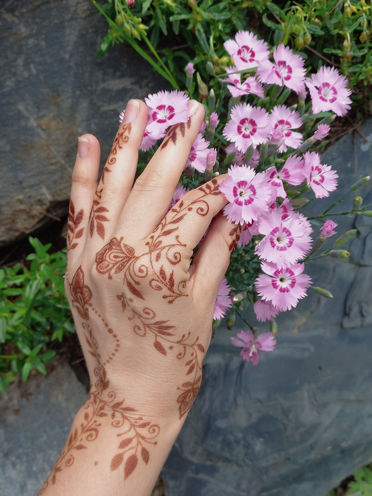
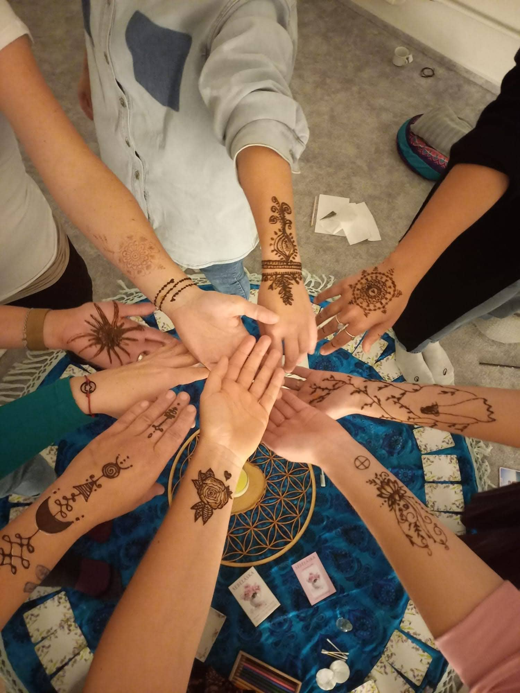
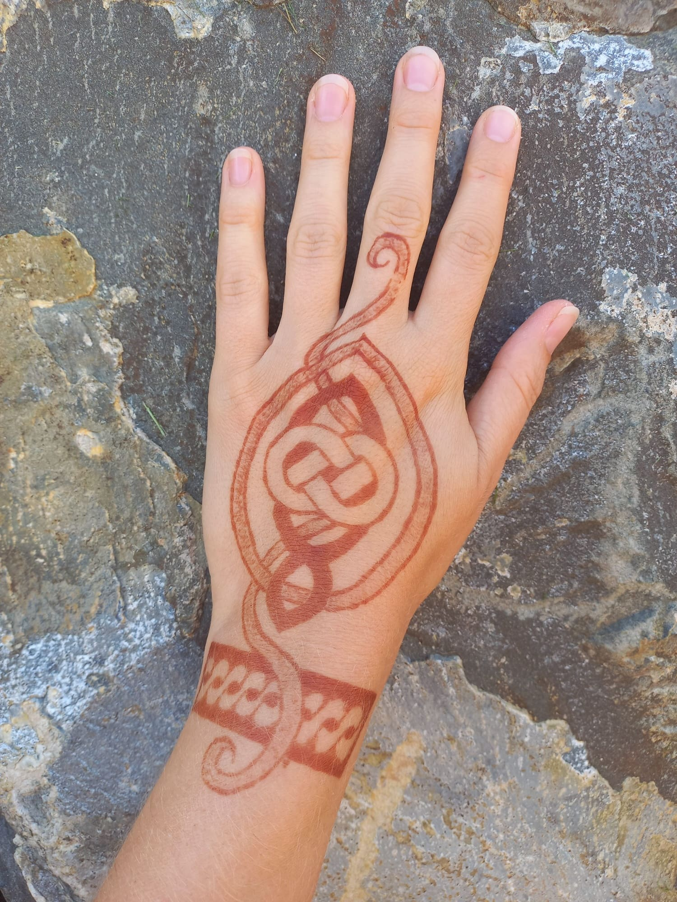

Jsem Radka Petrtýlová. Říkejte mi Radu.
Moje kariéra začala v prostředí, kde bylo potřeba rozumět technice i lidem zároveň. Překládala jsem požadavky zákazníků do řeči ajťáků – a složitá technická vysvětlení zpátky do srozumitelného jazyka.
Dnes tuto dovednost používám v online podnikání. Nezahlcuji vás tím, co vědět nepotřebujete. Hlídám návaznosti, dotahuji detaily a přemýšlím technicky tak, abyste vy nemusely.
Spolupracuji s podnikatelkami, které už na to nechtějí být samy.
V online světě jsem začínala v týmu Lucie Harnošové v rámci projektu Alchymie ženy. Naučila jsem se vše důležité, co s online světem podnikání souvisí. Mimo jiné jsem také organizovala setkání naživo, které pro mě byly vždy velmi naplňující.
Osudový byl pro mě kurz od Magdy Bouškové pro tvorbu webových stránek, díky kterému jsem nastartovala moji cestu webařky.
Nevytvořím vám jen web. Díky spolupráci s markeťačkou a copywriterkou Lucií Kozielovou vám pomůžeme ujasnit si strategii vaší značky a vystavíme moderní web, který bude stát na smysluplných základech.
Mým cílem je, aby technologie byly vaším spojencem, ne překážkou. Postarám se o vaše technické zázemí a vy se můžete naplno věnovat své vizi a svým klientům.
Malování hennou mi přináší chvíle ticha a tvoření rukama, což je skvělý kontrast k technické práci u počítače.
Moji tvorbu můžete sledovat na Instagramu.
@petrtylova.radkaProstor, kde můžeš odložit každodenní starosti a dopřát si chvíli jen pro sebe. V kruhu tě čeká klid, sdílení, podpora a inspirace.
Místo na kruhu je potřeba rezervovat dopředu.
To mě zajímá


Jsem máma 2 dětí a manželka milujícího muže. Díky mé práci trávím hodně času online, což mi dává velkou svobodu pracovat odkudkoli a kdykoli. Ale má to i svou druhou stranu – chyběl mi osobní kontakt s ženami na stejné vlně.
Proto vytvářím bezpečný prostor, kde se můžeme potkat, více se poznat a vzájemně se obohatit. Ráda tato setkání propojuji i s malováním hennou, které přináší ztišení a naladění na přítomný okamžik.
Těším se na společné setkání
nebo na pracovní propojení.
Vyberte si termín pro nezávazný hovor a probereme, jak vám mohu uvolnit ruce.
Domluvit si hovor